4.4 Cas particulier des connexions linéaires
4.4.1 Définition et généralités
A priori, un fibré principal donné n’est pas nécessairement relié au fibré des
repères linéaires d’une variété. Cela étant, il est certain que le fibré des repères
linéaires fournit un exemple particulièrement remarquable d’espace fibré. Il en va
de même, plus généralement, pour n’importe quel fibré principal associé au fibré
tangent d’une variété et pour lequel, donc, le groupe structural est un sous-groupe
de GL(n, I R).
On dira qu’une connexion est une connexion linéaire si elle est définie dans le
fibré principal des repères linéaires ou dans un sous-fibré de ce dernier. Ce qu’il y
a de particulier dans ce cas est que les indices de fibre (que nous avons noté
i,j,k… dans les sections précédentes) peuvent coïncider —ou tout au moins être
canoniquement associés — avec les indices de base (que nous avons noté
μ,ν,ρ,… dans les sections précédentes). Dans le paragraphe consacré
aux différentielles extérieures covariantes, nous nous sommes efforcés
de bien établir une distinction entre ces deux types d’indices. Le fait
de pouvoir les confondre, dans le cas des connexions linéaires, ouvre de
nouvelles possibilités (on peut ainsi, par exemple, “contracter” un indice de
fibre avec un indice de base) mais est également à l’origine de confusions
dangereuses…
Bien évidemment, les connexions dans des fibrés vectoriels associés
quelconques (non reliés au fibré tangent) sont aussi “linéaires” que “nos”
connexions linéaires mais il se trouve qu’une grande partie de la planète (en
particulier la communauté des physiciens théoriciens) a adopté cette terminologie,
par ailleurs commode.
Nous venons de définir une connexion linéaire comme connexion définie dans
le fibré des repères linéaires ou dans un sous-fibré de ce dernier. Il y a là
une subtilité qu’il faut bien comprendre : il est certain qu’une forme de
connexion à valeurs dans l’algèbre de Lie du groupe H, avec H ⊂ G, peut
s’étendre à une forme de connexion à valeurs dans l’algèbre de Lie de G
puisque tout fibré principal peut être élargi (relire à ce sujet la section
consacrée au changement de groupe structural dans les fibrés principaux)
et qu’il suffit alors de mettre à zéro les composantes supplémentaires
de la forme de connexion choisie. Par contre, et même dans le cas où le
fibré des repères linéaires peut être réduit (relire la même section), il
n’est pas du tout évident que la forme de connexion puisse l’être. Nous
reviendrons à ce problème dans la section consacrée à l’étude des connexion
riemanniennes.
Il faut enfin attirer l’attention du lecteur sur le fait qu’il est a priori possible
de fabriquer, à partir d’une variété différentiable de dimension n donnée,
différents fibrés principaux ayant pour groupe structural GL(n, I R) et ne
coïncidant pas entre eux. Par exemple, on peut choisir une variété non
parallélisable (comme la sphère S4) et construire d’une part le fibré principal
(non trivial) des repères linéaires P ainsi que le fibré principal trivial
Q = S4 × GL(4, I R).
4.4.2 Potentiel de jauge et courbure des connexions linéaires
Une connexion linéaire étant un cas particulier de connexion principale,
tout ce qui a été écrit précédemment à ce sujet reste vrai. Nous nous
contenterons donc de re-écrire les formules les plus utiles dans le contexte
présent.
Pour des raisons historiques, le potentiel de jauge se note plutôt Γ (et non A)
et le tenseur de courbure se note plutôt R (et non F).
- Soit {Xa} une base de LieGL(n, I R) et { ∂__
∂xμ} le repère naturel associé
à une carte locale sur M. On pourra écrire

- En gardant la même notation Xa pour les matrices qui représentent
les générateurs, matrices qui agissent donc sur les n-uplets de
composantes des vecteurs tangents, Γ devient alors une matrice de
connexion dont les éléments de matrice Γρν sont des 1-formes, puisque
 Les nombres Γρμν sont les coefficients de connexion qu’on désigne
souvent, dans ce cas, sous le nom de Symboles de Christoffel . En fait,
les symboles de Christoffel désignent traditionnellement les coefficients
de connexion associés à la connexion riemannienne (connexion de
Levi-Civita) écrits dans un repère naturel (voir plus loin).
Les nombres Γρμν sont les coefficients de connexion qu’on désigne
souvent, dans ce cas, sous le nom de Symboles de Christoffel . En fait,
les symboles de Christoffel désignent traditionnellement les coefficients
de connexion associés à la connexion riemannienne (connexion de
Levi-Civita) écrits dans un repère naturel (voir plus loin).
- Attention, rien ne nous oblige à choisir la même base dans la fibre
au point P (i.e. dans T(M,P)) et dans l’espace tangent au point
P (encore T(M,P) !). Ainsi donc, nous pouvons choisir sur la base
un repère naturel {∂μ} et, sur la fibre —qui coïncide avec la base—
un repère mobile {eα = Λαμ∂
μ} ; dans ce cas, les éléments de
matrice se noteront Γβα et ce seront évidement toujours des 1-formes
Γβα = Γ
βμαdxμ.
- Par ailleurs, rien ne nous oblige, non plus, à choisir un repère naturel
sur la base… On pourrait, en effet, très bien choisir un autre repère
mobile eμ, avec co-repère dual eμ, auquel cas, on écrirait Γ
βα =
Γβμαeμ.
- Dans le cas où nous choisissons les indices de base différents des
indices de fibre, les diverses formules données dans les sections
précédentes pour un fibré vectoriel quelconque restent absolument
identiques (remplacer seulement les indices de fibre “i,j” par les
indices appropriés).
- Dans le cas où l’on décide d’utiliser un seul et unique repère local
(par exemple un repère naturel eμ = ∂μ et co-repère correspondant
eμ = dxμ), il faut faire très attention à la position de l’indice de forme
(il n’existe pas de conventions universelles !) En général,
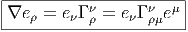 Pour un vecteur v = eν(.)vν ∈ TM, on obtient
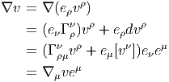
Notons que
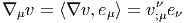
Pour les éléments du dual, la différentiation covariante introduit, comme
d’habitude, un signe “moins” :
 Attention : conformément à nos conventions générales (que nous ne
respectons pas toujours !) nous avons écrit les composantes à droite
des vecteurs de base, mais, bien que enu soit une dérivation de
l’algèbre des fonctions, il ne faut pas confondre le champ de vecteurs
v = eνvν, qui signifie, en fait, v[.] = e
ν[.]vν avec la fonction scalaire
eν[vν] !
Attention : conformément à nos conventions générales (que nous ne
respectons pas toujours !) nous avons écrit les composantes à droite
des vecteurs de base, mais, bien que enu soit une dérivation de
l’algèbre des fonctions, il ne faut pas confondre le champ de vecteurs
v = eνvν, qui signifie, en fait, v[.] = e
ν[.]vν avec la fonction scalaire
eν[vν] !
Re-écrivons, pour terminer, la loi de transformation des coefficients de
connexion (avec, par exemple eν′′ = Λ
ν′μe
μ)
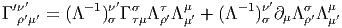
- En ce qui concerne le tenseur associé à l’opérateur de courbure, il se
nomme le tenseur de Riemann et ses composantes sont notées Rβμνα (au
lieu de Fβμνα). Si on choisit la même base dans la fibre et dans l’espace
tangent au point considéré, il se note alors Rσμνρ et il faut bien entendu se
rappeler qu’il est antisymétrique sur les indices μ et ν puisqu’il provient
d’une matrice R = dΓ + Γ ∧ Γ dont les éléments de matrice Rσρ sont des
2-formes.
Si le repère choisi est un repère naturel {eμ = ∂ __
∂xμ}, on a donc

Si le repère choisi est un repère mobile {eμ} avec fonctions de structure
fμνρ définies par [e
μ,eν] = fμνρe
ρ, on a
 où eμ désigne le corepère mobile dual.
où eμ désigne le corepère mobile dual.
L’expression R = dΓ + Γ ∧ Γ, ou, plus simplement, l’equation de structure
pour la courbure,
![R (u, v) = [∇u, ∇v ] - ∇[u,v]](source684x.png) équation établie en section 4.3.3, équation qui est, bien sûr, encore
valable dans le cas des connexions linéaires, nous permet de calculer
explicitement les composantes de R en fonction des coefficients
de connexion et des fonctions de structure du repère. On calcule
simplement
équation établie en section 4.3.3, équation qui est, bien sûr, encore
valable dans le cas des connexions linéaires, nous permet de calculer
explicitement les composantes de R en fonction des coefficients
de connexion et des fonctions de structure du repère. On calcule
simplement

où, comme d’habitude, on a noté h,μ = eμ[h], pour toute fonction
h, que {eμ} soit un repère mobile ou un repère naturel (dans ce
dernier cas, fμντ = 0). L’alignement des indices haut et bas dans
la formule précédente est pour l’instant sans importance, car on
n’a pas encore de métrique (de produit scalaire) pour identifier
un espace vectoriel avec son dual, c’est à dire pour “monter” ou
“descendre” les indices. Cela dit, c’est une bonne habitude d’écrire
Γα
βμ et fμνρ plutôt que Γ
βμα et f
μνρ car, dans la section suivante,
consacrée aux connexions métriques, nous poserons Γαβμ = gαγΓγ
βμ et
fμνρ = gρσfμνσ
4.4.3 Différentielle extérieure covariante (cas des connexions linéaires)
Nous avons déjà défini l’opérateur d∇ : Ωp(M,E) Ωp+1(M,E) agissant sur les
sections-p-formes d’un fibré vectoriel quelconque. Lorsque E = TM (ou une
puissance tensorielle quelconque d’icelui), ce qui a été précédemment écrit reste
vrai. La nouveauté vient du fait que, par suite de l’identification possible entre
indices de base et indices de fibre, un seul et même objet peut être regardé de
plusieurs façons différentes. Nous allons directement définir l’action de l’opérateur
D, agissant sur des objets indexés (par exemple Bμ
νρ) en décidant de ne
jamais faire apparaître les indices de forme : c’est ainsi que si nous nous
intéressons à une 2-forme à valeurs dans le fibré vectoriel TM ⊗ T*M ⊗ T*M,
objet dont la décomposition complète par rapport à un repère naturel
s’écrirait
Ωp+1(M,E) agissant sur les
sections-p-formes d’un fibré vectoriel quelconque. Lorsque E = TM (ou une
puissance tensorielle quelconque d’icelui), ce qui a été précédemment écrit reste
vrai. La nouveauté vient du fait que, par suite de l’identification possible entre
indices de base et indices de fibre, un seul et même objet peut être regardé de
plusieurs façons différentes. Nous allons directement définir l’action de l’opérateur
D, agissant sur des objets indexés (par exemple Bμ
νρ) en décidant de ne
jamais faire apparaître les indices de forme : c’est ainsi que si nous nous
intéressons à une 2-forme à valeurs dans le fibré vectoriel TM ⊗ T*M ⊗ T*M,
objet dont la décomposition complète par rapport à un repère naturel
s’écrirait
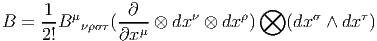
ou, mieux encore, plus simplement (c’est à dire en passant le ⊗
sous
silence)
 Nous conviendrons de sous-entendre les indices de forme σ, τ et d’appliquer D à
l’objet Bμ
νρ qui, évidemment, n’est plus une fonction mais une 2-forme,
puisque
Nous conviendrons de sous-entendre les indices de forme σ, τ et d’appliquer D à
l’objet Bμ
νρ qui, évidemment, n’est plus une fonction mais une 2-forme,
puisque
 C’est donc la notation elle-même qui définit le fibré dans lequel on se place,
puisque seuls apparaissent les indices de fibre. On voit donc que
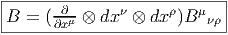
C’est donc la notation elle-même qui définit le fibré dans lequel on se place,
puisque seuls apparaissent les indices de fibre. On voit donc que
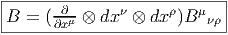
Pour ce qui est de l’opérateur D nous obtenons,

Nous laissons au lecteur le soin de généraliser (de manière évidente) ces
formules pour un objet B quelconque ayant un nombre quelconque d’indices en
haut et en bas. Dans le cas présent, l’objet obtenu est donc une 3-forme à valeurs
dans TM ⊗ T*M ⊗ T*M et on pourrait le noter, de façon intrinsèque, sous la
forme d∇B, avec, par conséquent
 L’inconvénient de la notation d∇B est qu’il faut se rappeler dans quel fibré on se
place ; en effet, rien ne nous interdit de considérer B comme une 0-forme à
valeurs dans TM ⊗ (T*M)⊗4 ou même, comme une 1-forme à valeurs dans
TM ⊗ (T*M)⊗3… le problème étant alors que les opérateurs d∇ relatifs à ces
différents fibrés sont différents et que donc, les objets d∇B obtenus sont
également différents (et tous absolument intrinsèques !). L’action de l’opérateur
D, quant à elle, est bien déterminée, à condition, bien sûr, d’adopter la
convention précédemment décrite, à savoir le fait d’écrire systématiquement les
indices de fibre et de simultanément masquer les indices de forme. Le lecteur
saura donc immédiatement calculer DBμ
νρ aussi bien que DBμ
νρστ ou que
DBμ
νρσ.
L’inconvénient de la notation d∇B est qu’il faut se rappeler dans quel fibré on se
place ; en effet, rien ne nous interdit de considérer B comme une 0-forme à
valeurs dans TM ⊗ (T*M)⊗4 ou même, comme une 1-forme à valeurs dans
TM ⊗ (T*M)⊗3… le problème étant alors que les opérateurs d∇ relatifs à ces
différents fibrés sont différents et que donc, les objets d∇B obtenus sont
également différents (et tous absolument intrinsèques !). L’action de l’opérateur
D, quant à elle, est bien déterminée, à condition, bien sûr, d’adopter la
convention précédemment décrite, à savoir le fait d’écrire systématiquement les
indices de fibre et de simultanément masquer les indices de forme. Le lecteur
saura donc immédiatement calculer DBμ
νρ aussi bien que DBμ
νρστ ou que
DBμ
νρσ.
Pour lever l’ambiguïté concernant la notation d∇, il faudrait écrire d
(p,q)∇
pour la différentielle extérieure covariante agissant sur les formes de degré
quelconque à valeurs dans (TM)⊗p ⊗ (T*M)⊗q.
Pour illustrer notre propos, nous considérons un premier exemple donné par un
tenseur antisymétrique de rang 2, noté F = 1
2Fμνdxμ ∧ dxν = Fμνdxμ ⊗ dxν, sur la
variété M. Nous pouvons considérer cet objet comme
- Une 2-forme sur M à valeurs réelles. Dans ce cas, la différentielle extérieure
covariante, que nous devrions noter d0,0∇ coïncide avec la différentielle
extérieure. En effet, puisqu’il n’y a aucun indice de fibre, l’opérateur D
agit sur F et
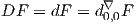 Le résultat est une 3-forme.
- Une 0-forme sur M à valeur dans le fibré T*M ⊗ T*M (en l’occurrence,
dans la partie antisymétrique de ce dernier). Dans ce cas l’opérateur D
agit sur Fμν et
 Quant à la différentielle extérieure covariante, que nous devrions noter
d0,2∇, elle est donnée par
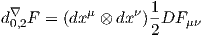 et coïncide donc tout simplement avec la différentielle covariante usuelle
puisque F est considérée comme 0-forme : ∇F = 1
2Fμν;ρdxμ ⊗ dxν ⊗
dxρ avec Fμν;ρ = Fμν,ρ - ΓμρσFσν - ΓνρσFμσ. Comme d’habitude, la
différentielle extérieure covariante d’une 0-forme coïncide avec la différentielle
covariante. Notons également que ∇F n’est pas complètement antisymétrique :
ce n’est pas une 3-forme mais une 1-forme à valeurs dans la partie antisymétrique
du produit tensoriel T*M ⊗ T*M.
Quant à la différentielle extérieure covariante, que nous devrions noter
d0,2∇, elle est donnée par
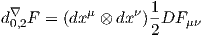 et coïncide donc tout simplement avec la différentielle covariante usuelle
puisque F est considérée comme 0-forme : ∇F = 1
2Fμν;ρdxμ ⊗ dxν ⊗
dxρ avec Fμν;ρ = Fμν,ρ - ΓμρσFσν - ΓνρσFμσ. Comme d’habitude, la
différentielle extérieure covariante d’une 0-forme coïncide avec la différentielle
covariante. Notons également que ∇F n’est pas complètement antisymétrique :
ce n’est pas une 3-forme mais une 1-forme à valeurs dans la partie antisymétrique
du produit tensoriel T*M ⊗ T*M.
- Une 1-forme sur M à valeurs dans le fibré vectoriel T*M. Conformément
à nos habitudes, nous faisons agir D sur un objet dont on n’écrit jamais
les indices de forme. On pose donc F = dxμFμ, ce qui définit en même
temps la 1-forme Fμ = Fμνdxν, et on calcule DFμ = dFμ - ΓμσFσ. La
différentielle extérieure covariante d0,1∇F = dxμDFμ est donc une 2-forme
sur M à valeurs dans T*M.
- Les deux indices de Fμν jouant des rôles semblables, on peut également
définir la 1-forme Fν′ = Fμνdxμ(= -Fν), calculer DFν′ = dFν′- ΓνσFσ′
et poser d0,1′∇F = dxνDFν′(= -d0,1∇F)
Notre deuxième exemple sera un tenseur symétrique de rang 2 noté g = gμνdxμ ⊗dxν. Cet
objet peut être considéré comme une 0-forme à valeurs dans le fibré T*M ⊗ T*M, en
l’occurrence, dans la partie symétrique de ce dernier, ou encore, de deux façons
différentes, comme une 1-forme à valeurs dans le fibré T*M. Pour être en accord avec
nos conventions d’écriture, on devrait plutôt écrire g = (dxμ ⊗ dxν)gμν lorsqu’on veut
considérer g comme 0-forme. Dans ce cas, on posera
 La
différentielle extérieure covariante d0,2∇ coïncide alors avec la différentielle covariante
∇ puisqu’elle est appliquée à une 0-forme :
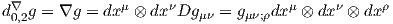 En
tant que 1-forme, on écrira plutôt g = dxμgμ, ce qui définit la 1-forme gμ = gμνdxν.
Dans ce cas, on posera
La
différentielle extérieure covariante d0,2∇ coïncide alors avec la différentielle covariante
∇ puisqu’elle est appliquée à une 0-forme :
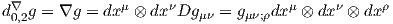 En
tant que 1-forme, on écrira plutôt g = dxμgμ, ce qui définit la 1-forme gμ = gμνdxν.
Dans ce cas, on posera
 et
la différentielle extérieure covariante d0,1∇g sera donnée par
et
la différentielle extérieure covariante d0,1∇g sera donnée par
 Les
deux indices de gμν jouant des rôles semblables, on peut également “geler” l’indice ν et
définir un autre objet d1,0′∇g, d’ailleurs égal à d0,1g puisque g est symétrique. Nous
reviendrons à ces diverses différentielles extérieures en donnant la définition du
laplacien de Lichnerowicz, page 394.
Les
deux indices de gμν jouant des rôles semblables, on peut également “geler” l’indice ν et
définir un autre objet d1,0′∇g, d’ailleurs égal à d0,1g puisque g est symétrique. Nous
reviendrons à ces diverses différentielles extérieures en donnant la définition du
laplacien de Lichnerowicz, page 394.
4.4.4 Forme canonique (ou forme de soudure)
Le lecteur est maintenant familiarisé avec ce qui fait l’originalité des connexions
linéaires par rapport aux connexions principales en général, à savoir la possibilité
d’identifier “les indices de base” avec “les indices de fibre”. Il est donc
largement temps d’examiner cette identification sous un angle un peu
plus géométrique, ceci va nous conduire à découvrir un nouvel objet : la
torsion.
Soit P = P(M,G) le fibré principal des repères sur M, ou un sous-fibré de ce
dernier. Soit e un élément de P, c’est à dire, un repère de M. Considérons un
vecteur u en e, c’est à dire un élément de T(P,e), c’est à dire encore,
intuitivement, un “petit déplacement” du repère e dans l’espace des repères.
Grâce à la projection π : P M qui, à un repère, associe son origine, ou plutôt,
grâce à son application tangente π*, nous pouvons prendre l’image v = π*u de u.
Le vecteur v est un vecteur tangent à M situé à l’origine du repère e :
v ∈ T(M,π(e)). Ce qu’il y a d’absolument unique dans le cas du fibré des repères,
c’est que nous pouvons maintenant décomposer v sur l’élément e de P d’où nous
sommes partis (puisque e est un repère !) : v = eμ.vμ, vμ ∈ I R. Nous avons donc
construit une application θ qui, à tout vecteur u tangent au fibré principal
P, associe un n-uplet de nombres (les composantes de v), c’est à dire
un élément de I Rn. Cette application θ est donc une 1-forme sur P à
valeurs dans I Rn et est désignée sous le nom de forme canonique (le mot
“canonique” faisant référence au fait que sa définition ne dépend d’aucun
choix de système de coordonnées) et quelquefois sous le nom de forme de
soudure puisqu’elle permet de “souder” la fibre type I Rn (considéré
comme espace de représentation pour le groupe linéaire) avec l’espace
tangent à la base. Cette forme θ est évidemment équivariante puisque
v = eμ.vμ = e
μΛ.Λ-1vμ. Elle définit donc une 1-forme sur M à valeurs dans le
fibré tangent TM = P ×GI Rn. A ce propos,nous suggérons au lecteur de relire la
discussion générale, section 3.3.10, décrivant la correspondance bi-univoque
existant entre sections de fibrés associés —ou p-formes à valeurs dans un fibré
associé— et les fonctions —ou les p-formes— équivariantes, définies sur le
fibré principal et à valeurs dans la fibre type. On identifie en général :
Ωeqp(P, I Rn) ≃ Ωp(M,TM).
M qui, à un repère, associe son origine, ou plutôt,
grâce à son application tangente π*, nous pouvons prendre l’image v = π*u de u.
Le vecteur v est un vecteur tangent à M situé à l’origine du repère e :
v ∈ T(M,π(e)). Ce qu’il y a d’absolument unique dans le cas du fibré des repères,
c’est que nous pouvons maintenant décomposer v sur l’élément e de P d’où nous
sommes partis (puisque e est un repère !) : v = eμ.vμ, vμ ∈ I R. Nous avons donc
construit une application θ qui, à tout vecteur u tangent au fibré principal
P, associe un n-uplet de nombres (les composantes de v), c’est à dire
un élément de I Rn. Cette application θ est donc une 1-forme sur P à
valeurs dans I Rn et est désignée sous le nom de forme canonique (le mot
“canonique” faisant référence au fait que sa définition ne dépend d’aucun
choix de système de coordonnées) et quelquefois sous le nom de forme de
soudure puisqu’elle permet de “souder” la fibre type I Rn (considéré
comme espace de représentation pour le groupe linéaire) avec l’espace
tangent à la base. Cette forme θ est évidemment équivariante puisque
v = eμ.vμ = e
μΛ.Λ-1vμ. Elle définit donc une 1-forme sur M à valeurs dans le
fibré tangent TM = P ×GI Rn. A ce propos,nous suggérons au lecteur de relire la
discussion générale, section 3.3.10, décrivant la correspondance bi-univoque
existant entre sections de fibrés associés —ou p-formes à valeurs dans un fibré
associé— et les fonctions —ou les p-formes— équivariantes, définies sur le
fibré principal et à valeurs dans la fibre type. On identifie en général :
Ωeqp(P, I Rn) ≃ Ωp(M,TM).
La 1-forme obtenue sur M se note encore θ et son expression, relativement au
choix d’un repère mobile {eμ} et du corepère mobile dual {θμ}, est tout
simplement
 où,
conformément à la convention déjà utilisée précédemment, nous avons omis de
faire figurer le symbole du produit tensoriel entre les éléments pris comme
base de la fibre (ici eμ) et ceux pris comme base de l’espace des formes
(ici θμ). Nous avons aussi, conformément à nos conventions, écrit les
formes à droite des vecteurs de la fibre. Notons enfin que θ est bien tel
que
où,
conformément à la convention déjà utilisée précédemment, nous avons omis de
faire figurer le symbole du produit tensoriel entre les éléments pris comme
base de la fibre (ici eμ) et ceux pris comme base de l’espace des formes
(ici θμ). Nous avons aussi, conformément à nos conventions, écrit les
formes à droite des vecteurs de la fibre. Notons enfin que θ est bien tel
que
 θ
n’est donc rien d’autre que l’application identique… mais considérée comme
1-forme sur M à valeurs dans le fibré tangent, c’est à dire, comme un élément de
Ω1(M,TM). Dans la littérature physique, le repère mobile {e
μ} entrant dans
l’expression de la forme de soudure est quelquefois appel/ vierbein (“quatre
pattes”).
θ
n’est donc rien d’autre que l’application identique… mais considérée comme
1-forme sur M à valeurs dans le fibré tangent, c’est à dire, comme un élément de
Ω1(M,TM). Dans la littérature physique, le repère mobile {e
μ} entrant dans
l’expression de la forme de soudure est quelquefois appel/ vierbein (“quatre
pattes”).
4.4.5 Torsion
Le lecteur trouve peut-être un peu longue (tordue ?) cette variation sur
l’application identique… mais il se trouve que c’est elle qui fait la spécificité du
fibré principal des repères. Lorsque ce dernier est muni d’une connexion, la
différentielle covariante de θ n’est pas nécessairement nulle et n’est autre que la
torsion.
Reprenons :
 est
la 1-forme canonique
est
la 1-forme canonique
Définissons la 2-forme de torsion
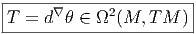
T est ainsi une 2-forme à valeurs dans le fibré tangent, on peut donc
l’écrire
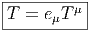 où
Tμ est la 2-forme,
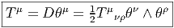
Bien entendu, on peut également considérer la torsion comme un tenseur de rang
3, de type (1, 2), antisymétrique sur les indices ν et ρ, et écrire
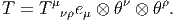
Calculons à présent la torsion à partir de sa définition :
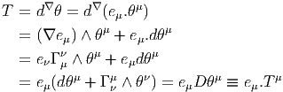
Ainsi
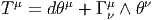 et
ses composantes sont Tμ
νρ = Tμ(e
ν,eρ)
La différentielle extérieure ordinaire d n’agissant que sur les indices de
forme, on a dθ = d(eμ.θμ) = e
μ.dθμ et on peut donc écrire, encore plus
simplement
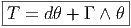 Si
on utilise également la notation D décrite avec force détails en section 4.2.7, on
voit que
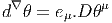
(puisque θ = eμ.θμ), et donc
 On
pourra également écrire Tνρ = T(eν,eρ).
On
pourra également écrire Tνρ = T(eν,eρ).
4.4.6 Equation de structure pour la torsion
Nous avons établi, en section 4.2.8, l’égalité suivante, valable pour la différentielle
extérieure covariante d’une 1-forme σ quelconque, à valeurs dans un fibré
vectoriel E : soit σ ∈ Ω1(M,E), alors
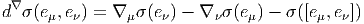
Dans le cas particulier où E = TM et où σ est égale à la forme canonique θ,
l’égalité précédente se simplifie considérablement puisque θ n’est autre que
l’identité (θ(v) = v). Il vient donc
![|-----------------------------|
|Tμν = ∇ μeν - ∇ νeμ - [eμ,e ν]|
------------------------------](source714x.png) Cette dernière égalité, qui est quelquefois prise comme définition de la torsion, est
l’équation de structure cherchée. L’expression du tenseur de torsion en termes de
coefficients de connexion et des fonctions de structure du repère mobile
([eμ,eν] = fμνρe
ρ) est donc la suivante
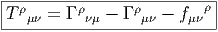 On
retrouve, bien sur, la propriété d’antisymétrie qu’on connaissait déjà :
Cette dernière égalité, qui est quelquefois prise comme définition de la torsion, est
l’équation de structure cherchée. L’expression du tenseur de torsion en termes de
coefficients de connexion et des fonctions de structure du repère mobile
([eμ,eν] = fμνρe
ρ) est donc la suivante
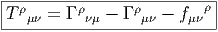 On
retrouve, bien sur, la propriété d’antisymétrie qu’on connaissait déjà :
 Notons que, si on se place dans un repère naturel (fμνρ = 0) l’expression du
tenseur de torsion est simplement donnée par la partie antisymétrique des
coefficients de connexion. En conséquence, si, dans un repère naturel, la
connexion est telle que Γρ
νμ = Γρ
μν, la torsion est nulle.
Notons que, si on se place dans un repère naturel (fμνρ = 0) l’expression du
tenseur de torsion est simplement donnée par la partie antisymétrique des
coefficients de connexion. En conséquence, si, dans un repère naturel, la
connexion est telle que Γρ
νμ = Γρ
μν, la torsion est nulle.
4.4.7 Identités de Bianchi pour les connexions linéaires
Nous avons, en section 4.3.4 établi l’identité de Bianchi relative à la courbure F
d’une connexion quelconque A. Rappelons qu’elle s’écrit dF + A ∧ F = F ∧ A.
Dans le cas des connexions linéaires on obtient donc directement l’identité
 Rappelons que cette identité s’obtient en calculant la différentielle extérieure de
R = dΓ + Γ ∧ Γ, en substituant dΓ par R - Γ ∧ Γ dans le résultat. Pour des
raisons historiques cette identité relative à la courbure est connue sous le nom de
“deuxième identité de Bianchi”. Le qualificatif “deuxième” vient du fait qu’il
existe une “première identité de Bianchi” ; c’est une identité relative à la torsion,
elle n’a donc un sens que pour les connexions linéaires. Elle s’obtient par une
méthode analogue à la précédente, mais cette fois-ci en calculant la différentielle
extérieure de la torsion.
Rappelons que cette identité s’obtient en calculant la différentielle extérieure de
R = dΓ + Γ ∧ Γ, en substituant dΓ par R - Γ ∧ Γ dans le résultat. Pour des
raisons historiques cette identité relative à la courbure est connue sous le nom de
“deuxième identité de Bianchi”. Le qualificatif “deuxième” vient du fait qu’il
existe une “première identité de Bianchi” ; c’est une identité relative à la torsion,
elle n’a donc un sens que pour les connexions linéaires. Elle s’obtient par une
méthode analogue à la précédente, mais cette fois-ci en calculant la différentielle
extérieure de la torsion.
D’où
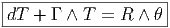 Les
deux identités de Bianchi s’écrivent, comme on vient de le voir, de façon assez
simple lorsqu’on utilise des notations suffisamment compactes. On peut même
“compactifier” davantage en écrivant d∇T = dT + ∇T = dT + Γ ∧ T et en
utilisant le fait que T = d∇θ ; l’identité de Bianchi relative à la torsion s’écrit
donc
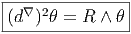 ce
qui est d’ailleurs bien évident puisque le carré de la différentielle extérieure
covariante n’est autre que l’opérateur de courbure. Par contre, si on veut
absolument écrire ces identités avec tous les indices, les choses peuvent devenir
assez compliquées... Pour apprécier tout le sel de cette remarque, il n’est
peut-être pas inutile de nous vautrer, pour un court paragraphe, dans la
“débauche des indices”, activité qui fut très prisée au début du siècle et qui reste
encore presque indispensable lorsqu’on veut effectuer des calculs totalement
explicites.
Première identité (relative à la torsion)
Le membre de droite de cette identité s’écrit explicitement
Donc
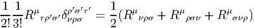 Le
membre de gauche, quant à lui, dTμ + Γ
τμ ∧ Tτ peut également s’évaluer sur
eν ⊗ eρ ⊗ eσ. Il est donc possible d’écrire la première identité de Bianchi de
façon telle que seuls les tensions de courbure et de torsion apparaissent
explicitement :
 Si
on introduit l’opérateur de cyclicité Σλ défini pour tout tenseur B de rang trois
par
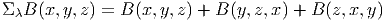
cette identité s’écrit encore :
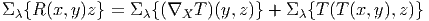
Si
on introduit l’opérateur de cyclicité Σλ défini pour tout tenseur B de rang trois
par
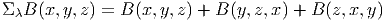
cette identité s’écrit encore :
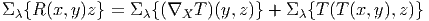
Deuxième identité (relative à la courbure)
On peut soumettre la deuxième identité de Bianchi (celle relative à la courbure) à
un traitement similaire : le membre de gauche dR + Γ ∧ R se transcrit
immédiatement en une somme cyclique de dérivées covariantes du type Rμ
νρσ;τ et
le membre de droite R ∧ Γ peut se retranscrire en une somme de termes du type
Rμ
νρσTρ
τκ en utilisant la relation entre torsion et coefficients de connexion établie
en 4.4.6. Il vient
 Cette identité s’écrit encore
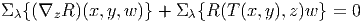
Cette identité s’écrit encore
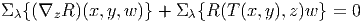
4.4.8 Dérivées covariantes secondes, hessien et identités de Ricci
-
Commentaires concernant D2.
- Tout d’abord, on sait que le carré
de l’opérateur de différentiation extérieure covariante d∇ n’est autre
que la courbure. Retrouvons tout d’abord cette propriété, à titre
d’exercice, dans quelques cas particuliers, en utilisant l’opérateur D.
Soit v ∈ Ωp(M,TM), on a
 où vα est une p-forme sur M.
où vα est une p-forme sur M.
Ainsi donc, D2vα = Rα
β ∧ vβ, comme il se doit.
Soit maintenant v ∈ Ωp(M,TM ⊗ T*M), donc v = e
α ⊗ θβv
βα
où vβα est une p-forme. Un calcul parfaitement analogue conduit
à
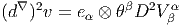
avec
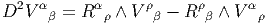
Le fait d’obtenir une somme de deux termes faisant intervenir la 2-forme de
courbure ne doit pas surprendre : cela est fondamentalement lié à la façon
dont se représente l’algèbre de Lie du groupe linéaire dans la définition du
fibré vectoriel TM ⊗ T*M.
La généralisation est évidente : si, par exemple, v ∈ Ωp(M,TM ⊗T*M ⊗T*M)
c’est à dire v = eα ⊗ θβ ⊗ θγ.vα
βγ, avec vα
βγ ∈ Ωp(M), alors
(d∇)2v = e
α ⊗θβ ⊗θγD2vα
βγ et D2vα
βγ = Rα
ρ ∧V ρ
βγ -Rρ
β ∧V α
ργ -Rρ
β ∧V α
βρ
-
Opérateurs ∇∇∇…
-
Soit S est un tenseur quelconque de rang (r,s), considéré comme section
de E = TM⊗r ⊗ T*M⊗s, c’est à dire S ∈ Ω0(M,E), nous voulons donner
un sens à ∇∇S. Nous savons que ∇S est une 1-forme à valeurs dans E,
(ainsi ∇S = d∇S ∈ Ω1(M,E), puisque que ∇ et d∇ coïncident sur les
0-formes), et que (d∇)2S ∈ Ω2(M,E), mais ∇, par définition, n’agit que sur
les 0-formes (à valeurs dans n’importe quel fibré). Pour pouvoir appliquer
∇ sur ∇S il suffira donc de considérer les 1-formes à valeurs dans E
comme des 0-formes à valeurs dans E ⊗ T*M. Encore une fois,
nous identifions Ω1(M,E) avec Ω0(M,E ⊗ T*M) (l’application
identique sera notée Id). Explicitement, si v = eIV I ∈ Ω1(M,E), avec
V I = V
μIθμ ∈ Ω1(M) et si “I” désigne un multi-indice relatif à une base
de E, on écrira simplement v = eIθμV
μI ∈ Ω0(M,E ⊗ T*M), avec
V μI ∈ Ω0(M). Pour ne pas alourdir les notations, on note encore v l’image
de v par l’application identique ! Cette application identique déguisée Id
se généralise d’ailleurs de façon évidente pour fournir un homomorphisme
injectant l’espace vectoriel Ωp(M,E) dans Ω0(M,E ⊗ (T*M)⊗p)). Il faut
donc comprendre ∇∇S comme
 mais, bien entendu, nous n’écrivons jamais Id explicitement. Noter que
rien n’interdit au lecteur un peu pervers de considérer des objets
comme
mais, bien entendu, nous n’écrivons jamais Id explicitement. Noter que
rien n’interdit au lecteur un peu pervers de considérer des objets
comme
 … qu’il faut comprendre comme la composée et de comparer cet opérateur avec, par exemple ∇∇∇d∇d∇∇d∇∇S !
… qu’il faut comprendre comme la composée et de comparer cet opérateur avec, par exemple ∇∇∇d∇d∇∇d∇∇S !
-
Hessien.
- Nous nous contenterons d’examiner d’un peu plus près l’opérateur
Hess = ∇∇. Prenons S ∈ Ωp(M,E), S = eISI avec SI ∈ Ωp(M). Alors
∇S = eIDSI ∈ Ωp+1(M,E) qu’on peut considérer (application Id)
comme ∇S = eIθβS;βI ∈ Ωp(M,E ⊗ T*M) puisque DSI = θβS;βI.
Alors ∇∇S = eI ⊗ θβ ⊗ (S;βI);γθγ ∈ Ω1(M,E ⊗ (T*M)) qu’on peut
considérer comme ∇∇S = eI ⊗ θβ ⊗ θγ(S;βγI) ∈ Ω0(M,E ⊗ (T*M)⊗2). On a
noté S;βγI = (S;βI);γ les composantes de ∇∇S. On note également
∇βS = ⟨∇S,eβ⟩ = eI.S;βI ∈ Ω0(M,E) la dérivée covariante de S
dans la direction eβ. La dérivée covariante de ∇S —considérée
comme élément de Ω0(M,E ⊗ T*M)— dans la direction eγ sera donc
∇γ∇S = ⟨∇(∇S),eγ⟩ = eI ⊗ θβ(S;βI);γ ∈ Ω0(M,E ⊗ T*M), par conséquent
eI.S;αγI = ⟨⟨∇∇S,eγ⟩,eα⟩ = ⟨∇∇S,eα ⊗ eγ⟩. Attention : ∇βS ∈ Ω0(M,E), β
étant fixé, est une brave section de E et on peut donc aussi calculer ∇∇βS qui
est un élément de Ω1(M,E), mais alors, l’indice β étant gelé, il n’y a
pas à introduire de Γ relatif à l’indice β dans le calcul de ∇∇βS. La
conclusion est alors que ∇α(∇βS) = ⟨∇⟨∇S,eβ⟩,eα⟩ n’est absolument pas
égal à S;αβ = ⟨⟨∇∇S,eβ⟩,eα⟩ ; il faut donc faire très attention ! En
pratique, les choses sont assez simples car ce sont les composantes de ∇∇S
(ou d’autres expressions d’ordre supérieur du même type) qui sont
intéressantes et non les composantes de ∇(∇βS). La raison pour laquelle nous
consacrons ces quelques lignes à attirer l’attention du lecteur sur ce sujet
assez trivial, c’est que la confusion possible dont on vient de parler
est à l’origine de bien des erreurs… A ce sujet, il est assez inexact de
prétendre (comme on l’entend parfois) que “de toutes façons, un objet
tel que ∇βS n’est pas un objet covariant”, c’est faux. La situation
que nous avons ici est parfaitement analogue à celle qu’on rencontre
en relativité restreinte : bien que “l’énergie d’une particule” soit une
quantité dont la valeur dépende du repère (de l’observateur) choisi et donc
une caractéristique non intrinsèque de la particule, “l’énergie d’une
particule mesurée par un observateur déterminé” est néanmoins une
quantité digne d’intérêt qu’on peut d’ailleurs calculer dans n’importe quel
repère.
-
Hessien d’une fonction scalaire.
- Abandonnons là ces remarques
semi-pédagogiques et illustrons les considérations précédentes avec un
exemple très simple, le calcul de ∇∇h où h est une fonction sur la variété
M.
Prenons h ∈ Ω0(M, I R) et donc ∇h ∈ Ω1(M, I R)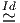Ω0(M,T*M) avec
∇h = θαh
;α, et h;α = h,α = eα[h] Partant de ∇h ∈ Ω0(M,T*M) on obtient
∇∇h ∈ Ω1(M,T*M) Ω0(M,T*M ⊗ T*M), ainsi
Ω0(M,T*M ⊗ T*M), ainsi
 En vertu des règles de calcul déjà établies, on obtient directement
h;αβ = eβ[h;α] - h;ρΓαβρ = e
β[h,α] - h,ρΓαβρ = e
β[eα[h]] - eρ[h]Γαβρ.
Ainsi
En vertu des règles de calcul déjà établies, on obtient directement
h;αβ = eβ[h;α] - h;ρΓαβρ = e
β[h,α] - h,ρΓαβρ = e
β[eα[h]] - eρ[h]Γαβρ.
Ainsi
![|--------------------------|
|h;αβ = eβ[e α[h ]] - eρ[h]Γ ρ |
------------------------α-β-](source738x.png) Notons que
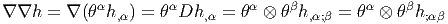
Dans un système de coordonnées locales {xμ}, on écrira
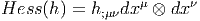
avec
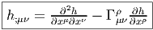
Notons que
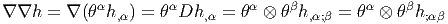
Dans un système de coordonnées locales {xμ}, on écrira
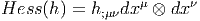
avec
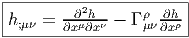
-
Hessien d’une 0-forme à valeurs vectorielles.
- PLus généralement, soit
ξ ∈ Ω0(M,E), {e
i} un repère dans les fibres de E et {θα} un corepère
mobile sur M. Il vient immédiatement : avec
 et
et
![i i γ i i j
ξ;αβ = eβ[ξ;α ] - Γαβξ;γ + Ajβξ;α](source744x.png) Noter que nous devons “corriger”, dans le calcul des dérivées covariantes,
aussi bien les indices de type TM (grâce à la connexion Γ) que les indices
de type E (grâce à la connexion A). Noter aussi que notre symbole ∇ est
“global” en ce sens que nous n’introduisons pas de symboles particuliers
pour les différentes connexions.
Noter que nous devons “corriger”, dans le calcul des dérivées covariantes,
aussi bien les indices de type TM (grâce à la connexion Γ) que les indices
de type E (grâce à la connexion A). Noter aussi que notre symbole ∇ est
“global” en ce sens que nous n’introduisons pas de symboles particuliers
pour les différentes connexions.
Nous reparlerons du hessien dans la section consacrée aux laplaciens (en
page 395).
-
Non commutation des dérivées covariantes secondes.
-
- Si {eμ} est un repère naturel {eμ = ∂ __
∂xμ}, il est bien évident que
∂μ∂νh = ∂ν∂μh, ce qu’on peut écrire hμν = hνμ.
- Si {eα} est un repère mobile ([eα,eβ] = fαβγe
γ), il faut déjà
remarquer le fait que h,αβ≠h,βα puisque h,αβ = eβ[eα[h]] et h,βα =
eα[eβ[h]], ainsi,
![|----------------γ------|
-h,αβ---h,βα-=---fαβeγ[h]-](source745x.png)
- Nous avons déjà calculé ∇∇h.
- Calculons maintenant la différence
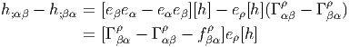
et donc, en utilisant l’expression du tenseur de torsion,
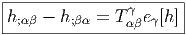 Cette identité est désignée sous le nom d’Identité de Ricci. Plus
généralement, on obtient des identités de ce type lorsqu’on calcule des
différences telles que S;αβI -S
;βαI, S désignant un tenseur quelconque.
Il faut donc remarquer le fait que les dérivées covariantes secondes ne
commutent pas en général.
Finalement, notons que h;α ~ h,α, l’indice α étant fixé, est une brave
fonction sur la variété (pas un vecteur tangent !). En conséquence,
∇βh,α = eβ[h,α] = eβ[eα[h]] et cette quantité, qu’on peut même noter
∇β∇αh n’est pas égale à h;αβ. A ce propos, relire la section 4.2.3
consacrée aux notations.
- Afin de familiariser le lecteur avec la manipulation des indices (activité
parfois fort utile), établissons l’identité de Ricci relative aux tenseurs de type
(1,0). Prenons V = V μeμ. Tout d’abord, voici le résultat :
 La démonstration est immédiate, il suffit de calculer V μαβ. Indications :
dans l’expression de V μ;αβ - V μ;βα, on reconnaît un terme RμσαβV σ
lorsqu’on utilise l’écriture explicite du tenseur de courbure Rμσαβ donnée en
fin de section 4.4.2 ainsi qu’un terme Tαβσ(V ,σμ + ΓρσμV ρ) = TαβσV μ;σ
lorsqu’on utilise l’expression explicite du tenseur de torsion donnée en fin de
section 4.4.6. Les autres termes se compensent (noter en particulier
que V μ;αβ - V μ;βα = [eβ,eα](V μ) = fαβρV ,ρμ et que ce terme se
compense avec le terme du même type apparaissant lorsqu’on écrit
-ΓαβσV ,σμ + ΓβασV ,σμ = TαβσV ,σμ + fαβσV ,σμ.
La démonstration est immédiate, il suffit de calculer V μαβ. Indications :
dans l’expression de V μ;αβ - V μ;βα, on reconnaît un terme RμσαβV σ
lorsqu’on utilise l’écriture explicite du tenseur de courbure Rμσαβ donnée en
fin de section 4.4.2 ainsi qu’un terme Tαβσ(V ,σμ + ΓρσμV ρ) = TαβσV μ;σ
lorsqu’on utilise l’expression explicite du tenseur de torsion donnée en fin de
section 4.4.6. Les autres termes se compensent (noter en particulier
que V μ;αβ - V μ;βα = [eβ,eα](V μ) = fαβρV ,ρμ et que ce terme se
compense avec le terme du même type apparaissant lorsqu’on écrit
-ΓαβσV ,σμ + ΓβασV ,σμ = TαβσV ,σμ + fαβσV ,σμ.
Le lecteur pourra généraliser sans peine les identités de Ricci relatives à des
tenseurs S d’ordre quelconque : en plus d’un unique terme de type “TS;”,
on voit apparaître, pour chaque indice du tenseur considéré, une
contribution —signée— de type ‘RS”, au membre de droite de
l’identité de Ricci. Par exemple, prenons S = eμ ⊗ eν ⊗ θρSρμν, il
vient
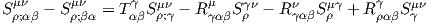
4.4.9 Tenseur de Ricci
Le tenseur de courbure F pour une connexion principale quelconque possède des
composantes Fji
μν et il est impossible de contracter l’indice i avec l’indice μ
puisque ces indices sont de nature différente : l’un est un indice de fibre et l’autre
un indice de base. Par contre, pour une connexion linéaire, on peut choisir le
même repère dans les fibres et sur la base, il devient donc possible de contracter
un indice de fibre avec un indice de base : à partir du tenseur de courbure R ≡ F
de composantes Rσρ
μν, on peut fabriquer un tenseur covariant de rang
2, le tenseur de Ricci , que nous noterons ρ et qui est donc défini par
l’égalité
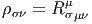
Notons que nous n’avons pas eu besoin de métrique pour définir ce tenseur alors
que l’utilisation d’une métrique est nécessaire, comme nous le verrons, pour
définir la courbure scalaire. Nous reviendrons au tenseur de Ricci dans le cadre de
l’étude des connexions métriques.
4.4.10 Courbes autoparallèles
Un champ de vecteurs v est dit parallèle ou transporté par parallélisme le long
d’un arc de courbe 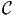 : τ ∈ I R →(τ) lorsque sa dérivée covariante est nulle dans
la direction du vecteur tangent u = d _
dτ à . Ce vecteur tangent possède des
composantes uα = d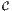α
dτ dans un repère donné. La loi du transport parallèle s’écrit
donc
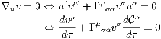
La courbe (τ) est dite courbe autoparallèle si son vecteur tangent u est
lui-même transporté par parallélisme le long de . Ainsi
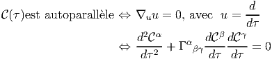
Nous verrons, dans la section consacrée aux connexions riemanniennes, comment
ces courbes autoparallèles sont reliées aux géodésiques. De fait, les autoparallèles
d’une connexion donnée sont quelquefois désignées sous le nom de “géodésiques
de la connexion”, mais nous préférons réserver cette terminologie au cas de
connexions très particulières.
4.4.11 Connexions linéaires sur les groupes et espaces homogènes
Soit G un groupe, que nous supposons ici compact, et G∕H un espace homogène.
Au niveau des algèbres de Lie, grâce au choix d’un produit scalaire dans LieG on
peut écrire LieG = LieH ⊕ 𝔰 où 𝔰 peut s’identifier avec l’espace tangent à G∕H
en l’origine. La forme de Maurer-Cartan sur G est à valeurs dans LieG et on peut
considérer sa projection sur LieH. On montre qu’on obtient ainsi une forme
de connexion (dite canonique) sur le fibré principal G = G(G∕H,H).
Par ailleurs nous supposons (cas usuel) que [LieH,𝔰] ⊂ 𝔰 et même que
∀h ∈ H,h𝔰h-1 ⊂ 𝔰. En d’autres termes, l’espace vectoriel 𝔰 est le support
d’une représentation linéaire du groupe H (c’est la représentation adH).
En conséquence, on obtient un homomorphisme de H dans End𝔰. Cet
homomorphisme permet d’étendre le fibré principal G = G(G∕H,H)
au fibré des repères linéaire au dessus de G∕H (c’est un fibré de base
G∕H et de fibre type GL(s) avec s = dim(𝔰)). La connexion canonique
donne ainsi naissance à une connexion linéaire sur l’espace homogène
G∕H.
Ce type de construction et les géométries qui lui sont associées constituent un
vaste chapitre de la géométrie différentielle et nous renvoyons le lecteur à un
ouvrage tel que [9] pour plus de détails. Notons pour finir qu’on obtient ainsi
également une connexion linéaire sur G lui-même lorsqu’on considère la variété
sous-jacente comme quotient de G×G par son sous-groupe diagonal (isomorphe à
G).